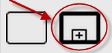
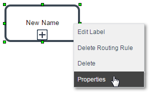
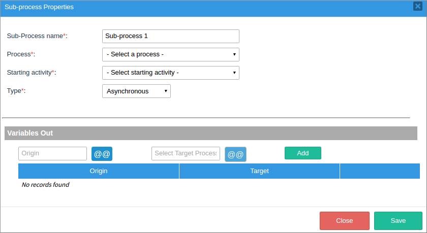
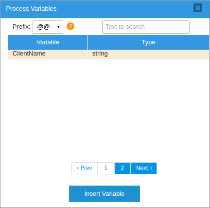
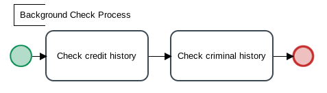

Overview
A Sub-process is a separate process that is embedded in another process. Unlike a pool, which generally contains a separate process from another organization, a Sub-process is generally from the same organization as the master process. It can include tasks, sub-processes, events, gateways, etc. A sub-process is basically a separate process included as part of a master process. When a sub-process is created in the master process, it is added like a task, but is linked to another, previously created process through its properties. Therefore, when the master process reaches the sub-process in its workflow, a new case of the process selected as the sub-process is started. While the sub-process is being run, variables can be passed between the master process and the sub-process.
Sub-processes can be used to break up complex processes into smaller units that are more manageable and easier to understand. They can be used to simplify the master process map so it is easier to understand at a glance, especially when users don't need to see the details of each sub-process. It is much easier to view a process map with a couple sub-processes rather than a couple dozen tasks.
Sub-processes can also be used to control which data is accessible to users. If certain data is sensitive and shouldn't be accessible to all users assigned to a case, that data can be used in a sub-process, but not passed as variables to the master process.
Another reason to use sub-processes is because they allow existing processes to be reused in a larger process. If the same sequence of tasks is used in multiple processes it is recommended to place those tasks in a separate process, which can then be included as a sub-process in other processes.
In the Shapes toolbox, the sub-process is represented by a rectangle with a bold border that has a box containing a plus sign inside, like it shows in the image below:

Adding a Sub-process
As shown in the picture below, to add a new sub-process drag the Sub-process icon from the Shapes toolbox and drop it into the Process Map.

By default, Sub-processes are named "Sub-process 1", and numbered according to the number of sub-processes in the master process. To edit the name, double click on it and “Sub-process 1” will be highlighted in blue, then give a new name of the Sub-process.

Then press the enter key or click outside the edit box to save the changes.

Note: Sub-processes CAN'T be the initial task of processes.
Configuring a Sub-process's Properties
After adding a sub-process to the Process Map, right click on it and select "Properties" from the context menu.

In the image below, the window opened has several options, which will be explained in the next four parts.
In this first part, the required information must be filled in for the sub-process to work correctly. All the fields are marked with an asterisk, meaning that they have to be filled in for the sub-process to work.

In this next image, the Sub-process name field is automatically filled in with the name generated when the sub-process was created, and can be changed. In this case the name will be “Sub-process1”.

Then, the second required field is Process, where an existing process is selected to be used as the sub-process.

Note: Only BPMN sub-processes can be used in a BPMN master process. Likewise, processes that are created in the classic designer can only use classic sub-processes.
Another required field is Starting Activity. This field selects the task in the sub-process where the case will start. Only tasks that are connected to a Start Event or Start Message Event in the selected process will be displayed in the list. The starting activity of the sub-process must have assigned user, otherwise it won't be available to be selected.

Note: Only tasks that have assigned users are listed in the Starting Activity dropdown.
The next required field is Type, which is very important. The user selects the type of interaction between the master process and the sub-process. As seen in the image, Type has two options: "Synchronous" and "Asynchronous". Where “Synchronous” means that the master process case will pause and wait for the sub-processes's case to complete before continuing its execution. When a synchronous sub-process finishes, variables can be passed from the sub-process's case back to the master process's case. In an asynchronous process, the master process does NOT pause and wait for the sub-process case. Instead, the master process immediately continues with its subsequent tasks. Both the master process's case and the sub-process's case continue in their own separate time.

Variables Out
In this second part, the Variables Out option will be explained. Take into consideration that whenever the type “Asynchronous” is selected, the user will have only the Variables Out option.

Note: The Variables In option will be explained further later this document.
A field with the name “Origin” appears first. It retrieves the names of the variables that will be passed to the sub-process from the master process.

Click on the @@ symbol to open a new window. Use the [@@] button to select variables from the master process. Make sure to select the correct variable type so it will be parsed correctly. After selecting a variable click on Insert Variable to close this window and add the chosen variables.

Variables should be referenced as follows so their data type won't be changed:
| Type | Referenced as: |
|---|---|
| Strings (a series of characters) | @@variable |
| Integers | @%variable |
| Floating-point numbers (Real numbers with a decimal point) | @#variable |
| Other data types (Boolean, array and object) | @=variable |
| Grids | @=variable |
Next, the Target field lists the target variables, which will receive the values of the variables passed from the master process. Click on the @@ symbol to open a new window and add a new target variable.

Use the [@@] button to select variables from the master process. After selecting a variable click on Insert Variable to close this window.

Click on the Add button to place the variables in the list of variables to be passed between the master process and the sub-process.

Then, click on the Save button to maintain all changes. Or, click on the Close button to discard all changes and close the modal window.

Variables In
In this part, the use of Variables In option will be explained. If the process is synchronous, a new section called “Variables In” will appear (see image below). This option selects variables from the sub-process to pass back to the master process when the sub-process finishes.

Like with Variables Out, two options are offered: “Origin” and “Target”. Choose variables for both of these options and add them to the sub-process (as shown in the Variables Out section).

Then, click on the Save button to maintain all the changes. Or click on the Close button to discard all changes and close the modal window.
Modifying a Sub-process
Right-click on the sub-process to view the options in the context menu.

Every option will be explained next few sections, except for Properties, which has already been explained.
Edit Label
Right click on the sub-process shape and select the option Edit Label to edit the label of the sub-process shown in the Process Map. This option allows the name of the sub-process to be changed.

Delete Routing Rules
To delete all outgoing routing rules from the sub-process, select the option Delete Routing Rule. In the message window that opens, the user has two options: click Yes to delete all outgoing routing rules from the sub-process, or click No to close the message without making any modifications.

If the routing rules were deleted, a flash message will appear at the top of the Process Map indicating that the routing rules were deleted successfully.
Deleting a Sub-process
To delete a sub-process element and all its configurations and routing rules from the Process Map, select the Delete option.

Allowing Processes to be Used Only as Sub-processes
If a process will only be used as a sub-process and will never be used as a stand-alone process, then mark it as a sub-process, so it will not appear in the list of available processes when a user creates a new case. To do this, open the process for editing. Right click on a blank area in the Process Map and select Edit Process from the context menu. In the Edit Process window that appears, mark the option “This is a Sub-process” and then click on Save.

Note: After clicking on Save, the process will no longer appear in the list of available processes when the user goes to HOME > New case. The process can only be used as a sub-process that is embedded in a master process.
Sub-Process Example
The following example will explain how to use sub-processes. A company has safety training that all employees in the company must attend every year, but new employees also need to pass through safety training when they begin employment at the company. Therefore, the "Safety Training Course" process can be run as a separate process for all employees every year or it can be run as a subprocess as part of the "New Employee Onboarding" process. To avoid having to implement the safety training process twice in ProcessMaker, it is easier to implement it once as a separate process, and then use that process as a sub-process in another process.
First, create the "Safety Training Course" process:

In the safety training course, the employee first reads the safety training manual then practices safety with a trainer and takes a written safety test. Both of these tasks have to be completed before the process checks whether the employee passed the test. If the test was passed, then the process ends, but if the test was failed, then the entire process needs to be repeated again.
Create the "New Employee Onboarding" process, which will execute the Safety Training Course as a subprocess:

The "New Employee Onboarding" process will be synchronous, meaning that it will need to wait until the "Safety Training Course" sub-process has finished executing before it continues on to the "Company protocol training" task. To define the sub-process when creating the master process, right click on the "Safety training" sub-process and select Properties from the context menu.

Select "Safety Training Course" for the sub-process and "Read Safety Manual" for the starting activity. Then, select "Synchronous" as the type of sub-process.
Then, specify which variables will be passed from the master process to the sub-process under the Variables Out section. In this example, the @@TrainingType and the @@Trainer variables in the master process will be passed to the @@TrainingCourse and @@TrainerName variables in the sub-process when a case is executed.
When the sub-process is done executing, the variables listed in the Variables In section will be passed back to the master process. In this example, the @@TrainingCourse, @@TrainerName, @=TrainingSchedule and @#TotalHours variables will be passed back to the "New Employee Onboarding" process. Notice that @=TrainingSchedule is an array that holds the values entered into a grid, so it needs to be specified with @= so its variable type isn't changed. If specified as @@, then it will be converted to a string, which will cause problems if the master process needs to access its values. Likewise, @#TotalHours is a floating point number (i.e., a real number with a decimal point), so it needs to be specified as @# so it won't be converted.

Note: In the sub-process properties, the Starting Activity field won't appear unless the process has users assigned. In other words, the master process must be assigned to someone so the sub-process can work accordingly. Remember that a sub-process depends on the master process.
Setting the Assigned User in a Sub-process Case
The user assigned to the subprocess case can be set in the master case by placing the unique ID of the user in a variable and passing that variable to the sub-process.
For example, the following master process contains the "Background Check" sub-process:

Which links to the following sub-process:
The user assigned to the "Investigate Client" task in the master process needs to be the same user who is assigned to the "Check Credit History" task in the sub-process.
First, create a string variable in both the master process and the sub-process named nextUser.
Then, create a trigger in the master process that stores the unique ID of the user currently logged in to the @@nextUser variable:
Set this trigger to execute before assignment in the "Investigate Client" task in the master process. Then, right click on the sub-process in the master process and select Properties from the context menu. In the Sub-process Properties dialog box, add @@nextUser to the list of variables that will be passed from the master process to the sub-process.

Then, go to the sub-process and in the Assignment Rules of the "Check Credit History" task, select Value Based Assignment and set its variable to be @@nextUser. Make sure that the same users who are assigned to the "Investigate Client" task in the master process are also assigned to the "Check Credit History" task. Value based assignment only works if the user ID in the variable is also in the list of users assigned to the task.

When a case is in the master process, the user assigned to the "Investigate Client" task should also be assigned to the "Check Credit History" task in the sub-process.